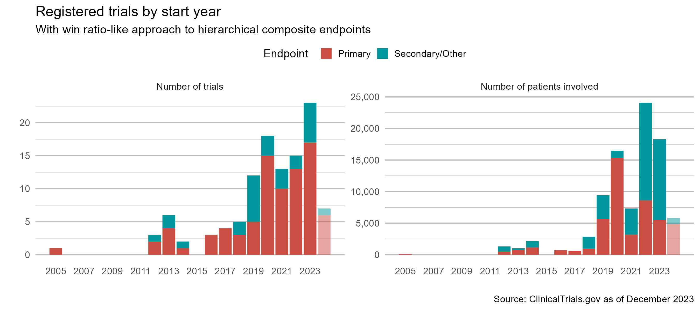
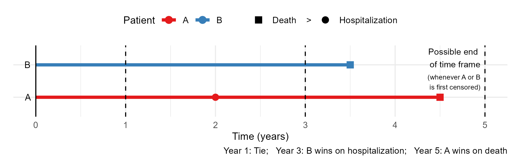

| Estimate (yrs) | 95% CI (yrs) | P-value | |
|---|---|---|---|
| Death | 0.62 | (0.20, 1.04) | 0.004 |
| Recurrence | 0.35 | (0.21, 0.49) | <0.001 |
| Overall | 0.97 | (0.47, 1.46) | <0.001 |
Defining estimand for win ratio
How to separate true effect from censoring
Lu Mao
Department of Biostatistics & Medical Informatics
University of Wisconsin-Madison
May 19, 2025
Main paper - https://doi.org/10.1177/17407745241259356
Outline
Background
Censoring’s impact on estimand
- Time frame of comparison
Two approaches to clarity
- Nonparametric: fix the time frame
- Semiparametric: posit a time-constant feature
Summary and discussion
\[ \def\a{{(a)}} \def\b{{(1-a)}} \def\t{{(1)}} \def\c{{(0)}} \def\d{{\rm d}} \def\T{{\rm T}} \]
Introduction
Composite Endpoint
- Traditional composite endpoint (TCE)
- Time to first event
- Major adverse cardiac event (MACE): death, heart failure, myocardio-infarction, stroke, etc.
- Limitations:
- Lack of clinical priority
- Statistical inefficiency (waste of data)
- Time to first event
- Hierarchical composite endpoint (HCE)
- Example: Death > nonfatal MACE > six-minute walk test (6MWT)/NYHA class
Win Ratio: Basics
- A common approach to HCE
- Proposed and popularized by Pocock et al. (2012)
- Treatment vs control: generalized pairwise comparisons
- Win-loss: sequential comparison on components
- Longer survival > fewer/later nonfatal MACE > better 6MWT/NYHA score
- Effect size: WR \(=\) wins / losses
- Alternative metrics
- Proportion in favor (net benefit): PIF \(=\) wins \(-\) losses
- Win odds: WO \(=\) (wins \(+\) \(2^{-1}\)ties) / (losses \(+\) \(2^{-1}\)ties)
Win Ratio: Gaining Popularity
- More trials are using it…

Estimand vs Censoring
An Important Caveat
WR’s estimand depends on censoring …
What is an estimand?
- Population-level quantity to be estimated
- Population-mean difference, (true) risk ratio, etc.
- Specifies how treatment effect is measured
- ICH E9 (R1) addendum: estimand construction one of the “central questions for drug development and licensing” (ICH, 2020)
- Population-level quantity to be estimated
Time Frame of Comparison
- Cause of dependency on censoring
- Censoring \(\to\) time frame of comparison \(\to\) magnitude of win/loss probabilities
- Example
- Pair 1: one patient censored at year 1, the other \(>1\) year
- Compared over \([0, 1]\) year
- Pair 2: neither patient censored until year 5
- Compared over \(> [0, 5]\) years
- More events \(\to\) fewer ties \(\to\) higher win/loss proportions
- Prioritized components more likely conclusive, harder to pass
- Pair 1: one patient censored at year 1, the other \(>1\) year
Win-Loss Changes with Time
- Illustration
- Win-loss status, and deciding component, changes with time 
- Longer follow-up …
- Parameters: win/loss proportions \(\uparrow\) (WR uncertain); tie proportion \(\downarrow\)
- Relative contribution: prioritized \(\uparrow\); deprioritized \(\downarrow\)
Trial-Dependent Estimand
- Actual estimand
- Average WR mixing shorter-term with longer-term comparisons
- Weight set (haphazardly) by censoring distribution
- Staggered entry, random withdrawal \(\to\) non-scientific
- Testing vs estimation
- Testing (qualitative): okay
- Valid under \(H_0\), powerful if treatment consistently outperforms control over time
- Estimation (quantitative): not okay
- Needs a generalizable target quantity (scientific estimand)
- Unaffected by length of trial, rates of patient accrual/loss to follow-up, etc.
- Testing (qualitative): okay
Two Approaches to Meaningful Estimand
General Strategies
- Goal: a meaningful, generalizable WR estimand
- Unaffected by censoring distribution
- Key strategy
- Be proactive on time frame of comparison
- Approaches
- Choose a fixed time (nonparametric)
- Model time trajectory with a constant parameter (semiparametric)
Time Restriction - Univariate
- Outcome data
- \(D^\a\): survival time for a patient in group \(a\) (\(1\): treatment; \(0\): control)
- \(S^\a(t) = P(D^\a>t)\)
- \(D^\a\): survival time for a patient in group \(a\) (\(1\): treatment; \(0\): control)
- Time restriction: a familiar concept
- Five-year survival rate of breast cancer patients
- Estimand: \(S^\t(\tau) - S^\c(\tau)\)
- Five-year average survival time
- Estimand: \(E\{\min(D^\t, \tau)\} - E\{\min(D^\c, \tau)\}\)
- Restricted mean survival time (RMST)
- Restriction time \(\tau=5\) years (pre-specify)
- Five-year survival rate of breast cancer patients
Time Restriction - WR
- Two-tiered composite
- \(D^\a\): survival time; \(T^\a\): time to (first) nonfatal MACE
- Restricted win/loss probability
- Image all patients followed up to \(\tau\) \[\begin{align}\label{eq:wl_2comp} w_{a, 1-a}(\tau) &= \underbrace{P\{D^\b < \min(D^\a, \tau)\}}_{\mbox{win on survival}}\\ & + \underbrace{P\{\min(D^\t, D^\c) > \tau, T^\b < \min(T^\a, \tau)\}}_{\mbox{tie on survival, win on nonfatal event}} \end{align}\]
- Restricted WR: \({\rm WR}(\tau)=w_{1, 0}(\tau)/w_{0, 1}(\tau)\)
Time Restriction - Estimation
- General case
- Formulate win/loss probability as function of time based on uncensored outcomes
- Pick restriction time \(\tau\)
- Estimation: must handle censoring properly
- Inverse probability censoring weighting (IPCW, Dong et al., 2020b, 2021)
- R-package:
WINS(Cui & Huang, 2023)
- R-package:
- Multiple imputations for data censored before \(\tau\) (T. Wang et al., 2023, 2024)
- Inverse probability censoring weighting (IPCW, Dong et al., 2020b, 2021)
Time Restriction - A Variation
- Take time difference into account
Temporal Modeling
- Cox proportional hazards (PH) model
- Time-varying hazard \(\stackrel{\rm PH}{\longrightarrow}\) time-constant hazard ratio (global effect)
- Checking proportionality: score residuals
- A proportional win-fractions (PW) model
- Time-varying win-loss probability \(\stackrel{\rm PW}{\longrightarrow}\) time-constant win ratio (global effect) (Mao & Wang, 2021a; T. Wang & Mao, 2022) \[\begin{equation}\label{eq:pw}
\frac{w_{1, 0}(t)}{w_{0, 1}(t)} = \exp(\theta) \mbox{ for
some $\theta$ and all } t
\end{equation}\]
- \(\exp(\hat\theta)\): standard or time-weighted WR statistic
- R-package:
WR(Mao & Wang, 2021b)
- Time-varying win-loss probability \(\stackrel{\rm PW}{\longrightarrow}\) time-constant win ratio (global effect) (Mao & Wang, 2021a; T. Wang & Mao, 2022) \[\begin{equation}\label{eq:pw}
\frac{w_{1, 0}(t)}{w_{0, 1}(t)} = \exp(\theta) \mbox{ for
some $\theta$ and all } t
\end{equation}\]
Checking Proportionality
- Cumulative residuals
\[\hat{\mbox{resid}}(t) = \mbox{(Observed wins by $t$)} - \mbox{(Model-based wins by $t$)}\]

Covariate Adjustment
HF-ACTION trial
- Exercise training \((n=1051)\) vs usual care \((n=1054)\) \[\begin{equation}\label{eq:pw_cov} \frac{w_{z, z'}(t)}{w_{z', z}(t)} = \exp\{\theta(a - a') + \beta^\T(x - x')\} \mbox{ for all } t \end{equation}\]
- Covariates \(x\): sex, etiology, CPX, medical history, etc.
Table 2: Multiple PW regression for death > hospitalization in HF-ACTION. Win ratio 95% CI P-value Training v usual 1.06 (0.95, 1.19) 0.275 Male vs female 0.72 (0.63, 0.82) <0.001 Ischemic vs non-ischemic 0.87 (0.76, 0.98) 0.027 CP exercise test (minute) 1.11 (1.09, 1.13) <0.001 Atrial fibrillation 0.80 (0.70, 0.92) 0.002
Conclusion
Summary
- How to separate true effect from censoring
- Make a conscious choice on time frame of comparison
- Fix it (nonparametric) or model it (semiparametric)
- Make a conscious choice on time frame of comparison
- Time restriction vs temporal modeling
- Combine the two
- IPCW + working model for locally efficient estimation?
- Nonparametric estimand but semiparametric inference
Future Work
- Sample size estimation
- Intercurrent event
- Treatment non-response/toxicity/discontinuation (ICH, 2020)
- Hypothetical: win/lose had treatment continued \(\to\) imputation?
- Composite: death > treatment failure > lesser events?
- Principal strata: win/lose among those who would not experience treatment failure if assigned to either group (identifiability)
For More
- Main paper
Mao, L. (2024). Defining estimand for the win ratio: separate the true effect from censoring. Clinical Trials, 21, 584-594. https://doi.org/10.1177/17407745241259356
Acknowledgments
Funding
- R01HL149875 (11/2019 – 7/2028)
- DMS2015526 (7/2020 – 6/2024)
Collaborators
- KyungMann Kim, Tuo Wang, Gaohong Dong, Bo Huang, etc.
References
Bebu, I., & Lachin, J. M. (2016). Large sample inference for a win ratio analysis of a composite outcome based on prioritized components. Biostatistics, 17(1), 178–187. https://doi.org/10.1093/biostatistics/kxv032
Cui, Y., & Huang, B. (2023). WINS: The r WINS package. https://CRAN.R-project.org/package=WINS
Dong, G., Huang, B., Chang, Y.-W., Seifu, Y., Song, J., & Hoaglin, D. C. (2020a). The win ratio: Impact of censoring and follow-up time and use with nonproportional hazards. Pharmaceutical Statistics, 19(3), 168–177. https://doi.org/10.1002/pst.1977
Dong, G., Huang, B., Wang, D., Verbeeck, J., Wang, J., & Hoaglin, D. C. (2021). Adjusting win statistics for dependent censoring. Pharmaceutical Statistics, 20(3), 440–450. https://doi.org/10.1002/pst.2086
Dong, G., Mao, L., Huang, B., Gamalo-Siebers, M., Wang, J., Yu, G., & Hoaglin, D. C. (2020b). The inverse-probability-of-censoring weighting (IPCW) adjusted win ratio statistic: an unbiased estimator in the presence of independent censoring. Journal of Biopharmaceutical Statistics, 30(5), 882–899. https://doi.org/10.1080/10543406.2020.1757692
Gasparyan, S. B., Kowalewski, E. K., Folkvaljon, F., Bengtsson, O., Buenconsejo, J., Adler, J., & Koch, G. G. (2021). Power and sample size calculation for the win odds test: application to an ordinal endpoint in COVID-19 trials. Journal of Biopharmaceutical Statistics, 31(6), 765–787. https://doi.org/10.1080/10543406.2021.1968893
ICH. (2020). ICH E9 (R1) addendum on estimands and sensitivity analysis in clinical trials to the guideline on statistical principles for clinical trials, step 5. London: European Medicines Evaluation Agency.
Li, H., Chen, W.-C., Lu, N., Tang, R., & Zhao, Y. (2024). The elusiveness of the win ratio parameter in the presence of missing data. Therapeutic Innovation & Regulatory Science, 1–2.
Luo, X., Tian, H., Mohanty, S., & Tsai, W. Y. (2015). An Alternative Approach to Confidence Interval Estimation for the Win Ratio Statistic. Biometrics, 71(1), 139–145. https://doi.org/10.1111/biom.12225
Mao, L. (2018). On the Alternative Hypotheses for the Win Ratio. Biometrics, 75(1), 347–351. https://doi.org/10.1111/biom.12954
Mao, L. (2021). Rmt: Restricted mean time in favor of treatment. https://CRAN.R-project.org/package=rmt
Mao, L. (2023). On restricted mean time in favor of treatment. Biometrics, 79(1), 61–72. https://doi.org/10.1111/biom.13570
Mao, L., Kim, K., & Miao, X. (2022). Sample size formula for general win ratio analysis. Biometrics, 78(3), 1257–1268. https://doi.org/10.1111/biom.13501
Mao, L., & Wang, T. (2021a). A class of proportional win-fractions regression models for composite outcomes. Biometrics, 77(4), 1265–1275. https://doi.org/10.1111/biom.13382
Mao, L., & Wang, T. (2021b). WR: Win ratio analysis of composite time-to-event outcomes. https://CRAN.R-project.org/package=WR
Oakes, D. (2016). On the win-ratio statistic in clinical trials with multiple types of event. Biometrika, 103(3), 742–745. https://doi.org/10.1093/biomet/asw026
Pocock, S. J., Ariti, C. A., Collier, T. J., & Wang, D. (2012). The win ratio: a new approach to the analysis of composite endpoints in clinical trials based on clinical priorities. European Heart Journal, 33(2), 176–182. https://doi.org/10.1093/eurheartj/ehr352
Wang, B., Zhou, D., Zhang, J., Kim, Y., Chen, L.-W., Dunnmon, P., Bai, S., Liu, Q., & Ishida, E. (2023). Statistical power considerations in the use of win ratio in cardiovascular outcome trials. Contemporary Clinical Trials, 124, 107040. https://doi.org/10.1016/j.cct.2022.107040
Wang, T., Li, Y., & Qu, Y. (2024). Restricted time win ratio: from estimands to estimation. Statistics in Biopharmaceutical Research, 1–18. https://doi.org/10.1080/19466315.2024.2332675
Wang, T., & Mao, L. (2022). Stratified proportional win-fractions regression analysis. Statistics in Medicine, 41(26), 5305–5318. https://doi.org/10.1002/sim.9570
Wang, T., Zilinskas, R., Li, Y., & Qu, Y. (2023). Missing Data Imputation for a Multivariate Outcome of Mixed Variable Types. Statistics in Biopharmaceutical Research, 15(4), 826–837. https://doi.org/10.1080/19466315.2023.2169753
Yu, R. X., & Ganju, J. (2022). Sample size formula for a win ratio endpoint. Statistics in Medicine, 41(6), 950–963. https://doi.org/10.1002/sim.9297